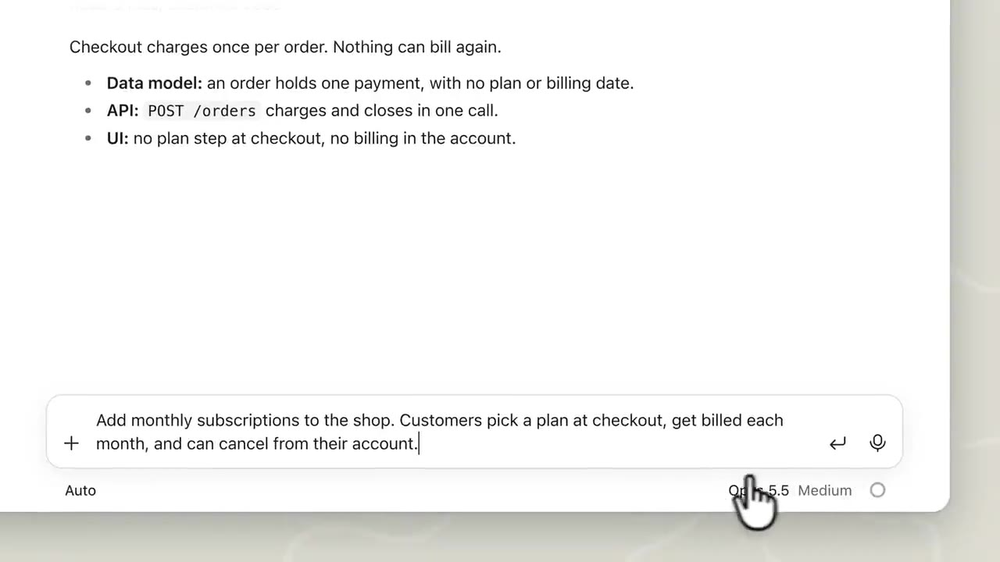
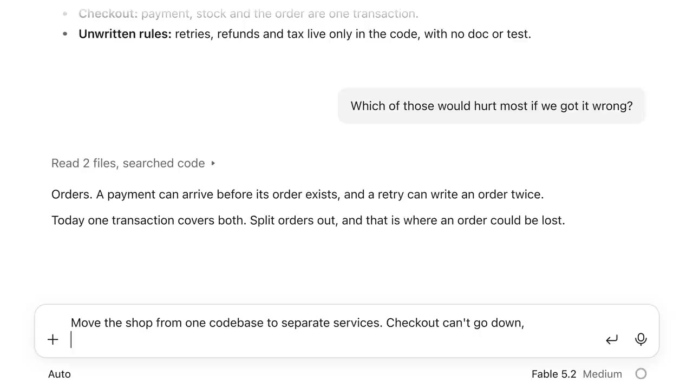
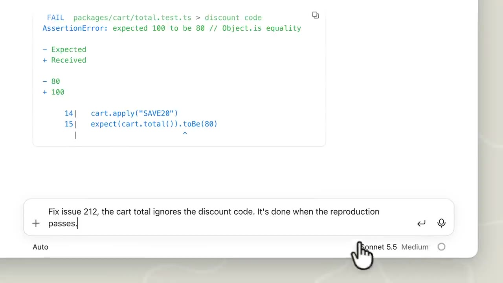
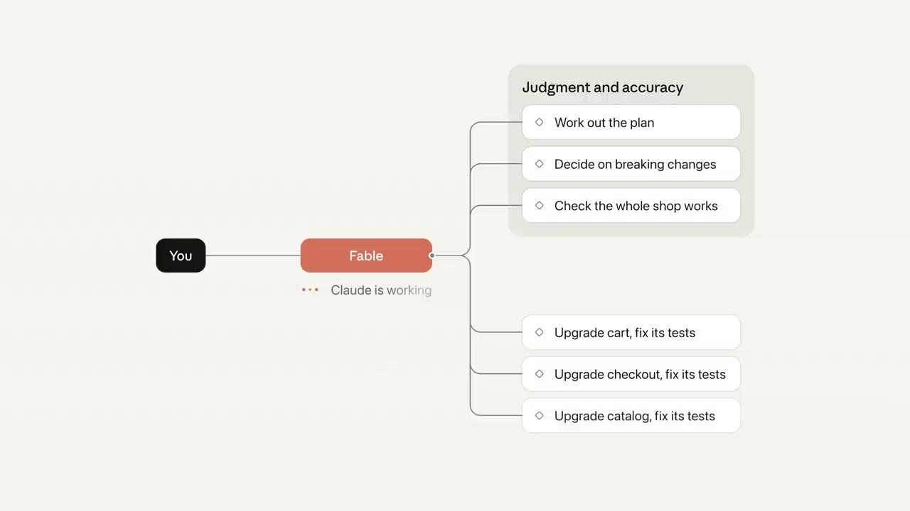

Fable 5.2 or Opus? When to use each model in Claude Code
▶ 원본 영상 보기한눈에 보기
- 대부분의 작업은 Opus 5.5(medium effort) 로 시작하는 것이 기본 권장이다.
- 결과가 부족하면 모델을 바꾸기 전에 effort 수준을 먼저 올린다 (프롬프트 캐시가 유지되기 쉽다).
- 크고 모호한, 판단·정확도가 중요한 작업은 Fable 5.2(토큰당 가격 Opus의 2배)로 올린다.
- 범위가 분명하고 속도·비용이 중요하면 Sonnet 5.5(Opus보다 빠르고 토큰당 절반 가격), 대량·저비용 작업은 Haiku 5.5를 쓴다.
- 큰 작업은 Fable이 주도하고 잘게 나뉜 부분은 서브에이전트(Sonnet) 에 맡기는 식으로 나눠 쓸 수 있다.
이런 분께 도움이 됩니다
- Claude Code에서 작업마다 어떤 모델을 골라야 할지 헷갈리는 분.
- 품질은 지키면서 비용·속도를 줄이고 싶은 분.
핵심 내용
모델 선택 기준 요약
| 모델 | 언제 쓰나 | 비고 |
|---|---|---|
| Opus 5.5 (medium) | 복잡한 코딩·지식 업무의 기본 모델, 시작점 | 데일리 드라이버 |
| Fable 5.2 | 야심차고 열린 결말의 작업, 품질이 최우선일 때 | 토큰당 Opus의 2배 가격 |
| Sonnet 5.5 | 범위가 분명한 작업, 속도·비용 중요 | Opus보다 빠르고 토큰당 절반 가격 |
| Haiku 5.5 | 요약·분류·라우팅 같은 대량·비용 민감 작업 | 가장 빠르고 저렴 |
기본값: Opus 5.5 + medium effort
- 복잡한 코딩과 지식 업무의 기본 선택이다. 예시는 온라인 쇼핑몰에 월 구독 기능을 추가하는 일로, 데이터 모델·API·UI를 모두 건드린다. (0:12)
- 모델과 effort를 기본값 그대로 두고 시작한다.
- 결과가 부족하면 먼저 effort를 올린다. 모델을 바꾸는 것보다 작은 조치이고 보통 프롬프트 캐시가 유지된다.
💡 모델을 바꾸기 전에 effort부터 올려 본다.

위로 올리기: Fable 5.2
- 전체 쇼핑몰을 새 아키텍처로 옮기는 것처럼 코드베이스 전반에 걸친, 정의가 느슨하고 마일스톤이 수십 개인 작업에 쓴다. (0:45)
- 아직 문서화되지 않은 결정이 많은 작업이다.
- 목표와 "절대 지킬 조건" 두 가지(결제가 멈추면 안 됨, 주문이 유실되면 안 됨)만 주면 계획·작업·테스트를 스스로 진행한다. (1:01)
- 결과가 검토 시 "완료"라고 볼 수준에 훨씬 가깝다고 설명한다.
💡 품질이 최우선인 열린 작업에만 2배 단가를 쓴다.

아래로 내리기: Sonnet 5.5 / Haiku 5.5
- Sonnet: 재현 방법이 분명한 버그 리포트처럼 "끝난 상태"를 한 문장으로 말할 수 있는 작업에 적합하다. (1:33)
- Haiku: 요약·분류·라우팅처럼 대량이고 비용에 민감한 작업에 쓴다. 예: 고객 문의함의 메시지를 들어오는 대로 분류하는 기능을, Claude API로 Haiku를 하루 여러 번 호출해 실행한다. (1:55)

한 작업을 여러 모델로 나누기
- 프레임워크 메이저 버전 업그레이드를 모든 패키지에 적용하는 크고 복잡한 마이그레이션은 Fable로 주도한다. (2:19)
- 패키지별 업그레이드와 테스트 수정은 범위가 분명하므로 Sonnet에 넘긴다.
- 서브에이전트(자체 컨텍스트를 가진 별도 Claude)가 한 부분을 처리하고 결과를 보고한다. Claude Code의 메인 세션이 이를 위임할 수 있다.
💡 어려운 판단은 Fable, 잘게 나뉜 반복 작업은 Sonnet 서브에이전트.

기억할 숫자·인용
- Fable 5.2: 토큰당 Opus의 2배 가격.
- Sonnet 5.5: Opus보다 빠르고 토큰당 절반 가격.
- 영상 설명란: 내 작업에서 모델별 성능을 재는 가이드 https://claude.dev/blog/which-claude-model-should-you-build-with/ (플랜별로 제공 여부·사용 한도가 다름)
생각해볼 점
- 가격 배수 외의 구체적인 성능·속도 수치는 영상에 없다. 실제 차이는 내 작업으로 직접 재봐야 한다 (영상도 가이드로 측정을 권함).
- 영상은 Anthropic 공식 채널의 모델 안내이므로 자사 모델 중심의 관점이다.
- Fable의 2배 단가가 실제 작업 총비용에서 얼마나 되는지는 사용 방식에 따라 달라질 수 있다 (내 의견).
바로 해볼 일
- 다음 작업은 Opus 5.5 medium으로 시작하고, 부족하면 effort부터 올려 본다.
- 범위가 분명한 작은 버그 하나를 Sonnet 5.5로 처리해 보고 결과·속도를 비교한다.
- 큰 작업이 있다면 Fable이 주도하고 세부 부분을 Sonnet 서브에이전트에 맡기는 구성을 시도해 본다.